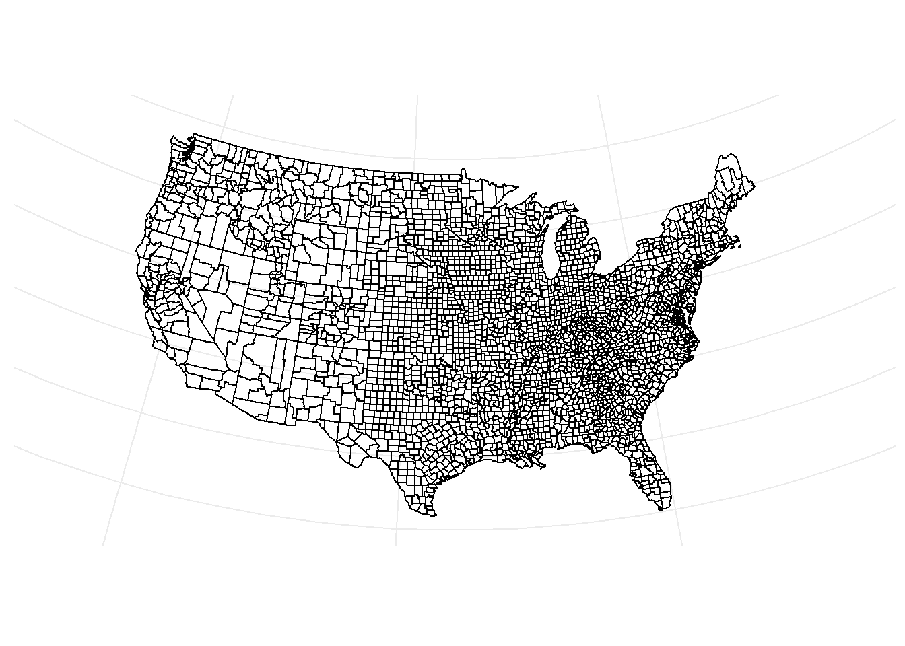
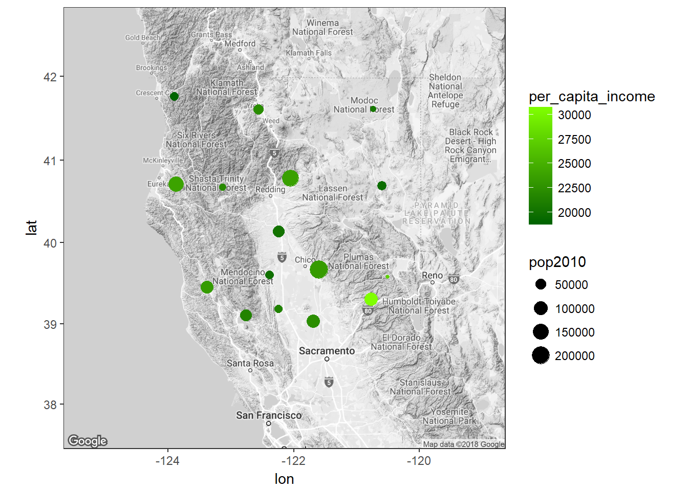

13.2 Mapping in R
- Use existing packages (easier)
- Import your own shape files (harder).
- A series of lat/long points and an order in which to to draw the lines between points can also be used but will need to be converted to a spatial polygon object at a later point.
13.2.1 Plotting Region polygons
Use the maps library get county border data. Take note of the variable names, we’ll want to merge other data onto this data frame later.
counties <- map_data("county")
head(counties)
## long lat group order region subregion
## 1 -86.50517 32.34920 1 1 alabama autauga
## 2 -86.53382 32.35493 1 2 alabama autauga
## 3 -86.54527 32.36639 1 3 alabama autauga
## 4 -86.55673 32.37785 1 4 alabama autauga
## 5 -86.57966 32.38357 1 5 alabama autauga
## 6 -86.59111 32.37785 1 6 alabama autaugaWe can use ggplot to draw polygons for each region/subregion.
ggplot() +
geom_polygon(data = counties, aes(x = long, y = lat, group = group),
color = "black", fill="NA") +
coord_map("albers", lat0 = 39, lat1 = 45) + labs(x=NULL, y=NULL) +
theme(panel.background = element_blank(), panel.border = element_blank(),
axis.ticks=element_blank(), axis.text = element_blank())
Let’s get county level data that we can plot and analyze. The countyComplete data can be obtained by either the OpenIntro package or from Dr. Donatello’s website.
cc <- read.csv("C:/GitHub/website/static/data/countyComplete.csv", header=TRUE)
cc[1:5,c(1,3,4,6,(ncol(cc)-5):ncol(cc))]
## name FIPS pop2010 age_under_5 fed_spending fed_spend00
## 1 Autauga County 1001 54571 6.6 331142 7.582652
## 2 Baldwin County 1003 182265 6.1 1119082 7.969818
## 3 Barbour County 1005 27457 6.2 240308 8.275639
## 4 Bibb County 1007 22915 6.0 163201 7.836406
## 5 Blount County 1009 57322 6.3 294114 5.764229
## fed_spend10 area density smoking_ban
## 1 6.068095 594.44 91.8 none
## 2 6.139862 1589.78 114.6 none
## 3 8.752158 884.88 31.0 partial
## 4 7.122016 622.58 36.8 none
## 5 5.130910 644.78 88.9 noneLooking at a few of the columns we see that this data contains county names, FIPS, county level data such as population, amount of federal spending, population density and what level of smoking ban that is in place. The only information that helps identify each county (other than the name) is FIPS. To add any points to a map, we need lat/long for points and region/subregion name.
The housingData package has a geoCounty data set that connects FIPS to the county centroid. A little data cleaning needs to be done first to match the region names with the names found in the counties data set.
library(housingData)
head(geoCounty)
## fips county state lon lat rMapState rMapCounty
## 1 01001 Autauga County AL -86.64565 32.54009 alabama autauga
## 2 01003 Baldwin County AL -87.72627 30.73831 alabama baldwin
## 3 01005 Barbour County AL -85.39733 31.87403 alabama barbour
## 4 01007 Bibb County AL -87.12526 32.99902 alabama bibb
## 5 01009 Blount County AL -86.56271 33.99044 alabama blount
## 6 01011 Bullock County AL -85.71680 32.10634 alabama bullock
# align names
county.info <- geoCounty %>% mutate(FIPS = as.numeric(as.character(fips)),
long.c = lon, lat.c=lat,
region=rMapState, subregion=rMapCounty) %>%
select(FIPS, long.c, lat.c, region, subregion)
head(county.info)
## FIPS long.c lat.c region subregion
## 1 1001 -86.64565 32.54009 alabama autauga
## 2 1003 -87.72627 30.73831 alabama baldwin
## 3 1005 -85.39733 31.87403 alabama barbour
## 4 1007 -87.12526 32.99902 alabama bibb
## 5 1009 -86.56271 33.99044 alabama blount
## 6 1011 -85.71680 32.10634 alabama bullockThen we merge lat/long centroids and region names to county complete data frame so that data and all geographic information are all on one data frame.
cc <- cc %>% left_join(county.info)
cc[1:5,c(1,3,4,6,(ncol(cc)-5):ncol(cc))]
## name FIPS pop2010 age_under_5 density smoking_ban long.c
## 1 Autauga County 1001 54571 6.6 91.8 none -86.64565
## 2 Baldwin County 1003 182265 6.1 114.6 none -87.72627
## 3 Barbour County 1005 27457 6.2 31.0 partial -85.39733
## 4 Bibb County 1007 22915 6.0 36.8 none -87.12526
## 5 Blount County 1009 57322 6.3 88.9 none -86.56271
## lat.c region subregion
## 1 32.54009 alabama autauga
## 2 30.73831 alabama baldwin
## 3 31.87403 alabama barbour
## 4 32.99902 alabama bibb
## 5 33.99044 alabama blountNow we see that lat/long data as well as region/subregion names have been added.
Last we’ll merge all this county level data to the map data.
cc.map <- counties %>% left_join(cc)
cc.map[1:5,c(1:4,6, (ncol(cc.map)-5):ncol(cc.map))]
## long lat group order subregion fed_spend10 area density
## 1 -86.50517 32.34920 1 1 autauga 6.068095 594.44 91.8
## 2 -86.53382 32.35493 1 2 autauga 6.068095 594.44 91.8
## 3 -86.54527 32.36639 1 3 autauga 6.068095 594.44 91.8
## 4 -86.55673 32.37785 1 4 autauga 6.068095 594.44 91.8
## 5 -86.57966 32.38357 1 5 autauga 6.068095 594.44 91.8
## smoking_ban long.c lat.c
## 1 none -86.64565 32.54009
## 2 none -86.64565 32.54009
## 3 none -86.64565 32.54009
## 4 none -86.64565 32.54009
## 5 none -86.64565 32.54009Notice now that values such as area and density are repeated across rows per subregion, which directly corresponds to the group variable that allowed us to identify counties on the map. Now we can re-plot the county level map, and add a shading layer to this plot that is % poverty.
ggplot() +
geom_polygon(data = cc.map, aes(x = long, y = lat, group = group,
fill = poverty), color = "black") +
coord_map("albers", lat0 = 39, lat1 = 45) + labs(x=NULL, y=NULL) +
theme(panel.background = element_blank(), panel.border = element_blank(),
axis.ticks=element_blank(), axis.text = element_blank()) +
scale_fill_continuous(low='white', high='darkorchid4')
group=subregion because county names are not unique. Change this value and replot the map above to see the impact. This demonstrates why having uniquely numbered shapes are critical for plotting.
13.2.2 Plotting points
Here is a different approach using a different package: ggmap. We use county centers for selected counties in Northern California instead of polygon regions to demonstrate how to plot points onto a map instead of regions.
library(ggmap)
norcal <- cc %>% filter(region=="california", subregion %in%
c('butte', 'shasta', 'tehama', 'lassen', 'modoc', 'siskiyou', 'humboldt',
'trinity', 'glenn', 'mendocino', 'sutter', 'sierra', 'nevada',
'del norte', 'lake', 'colusa'))
norcal.center <- c(mean(norcal$long.c), mean(norcal$lat.c))
norcal.center
## [1] -122.15392 40.18119The get_map function downloads google map data centered around location. See the ggmap quick start to see all the options you can use.
norcal.map <- get_map(location= norcal.center, zoom=7, color="bw")This approach uses ggmap() instead of ggplot(), but layers (such as points) are still added on in a similar fashion.
ggmap(norcal.map) +
geom_point(data=norcal, aes(x=long.c, y=lat.c,
color=per_capita_income, size=pop2010)) +
scale_color_gradient(low="darkgreen", high="chartreuse")